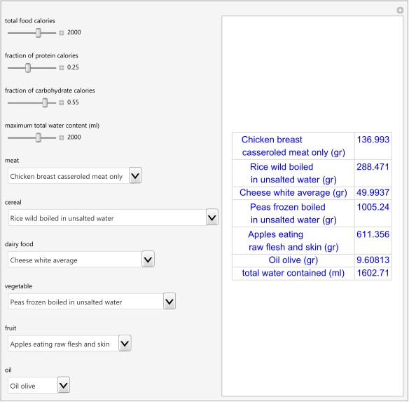
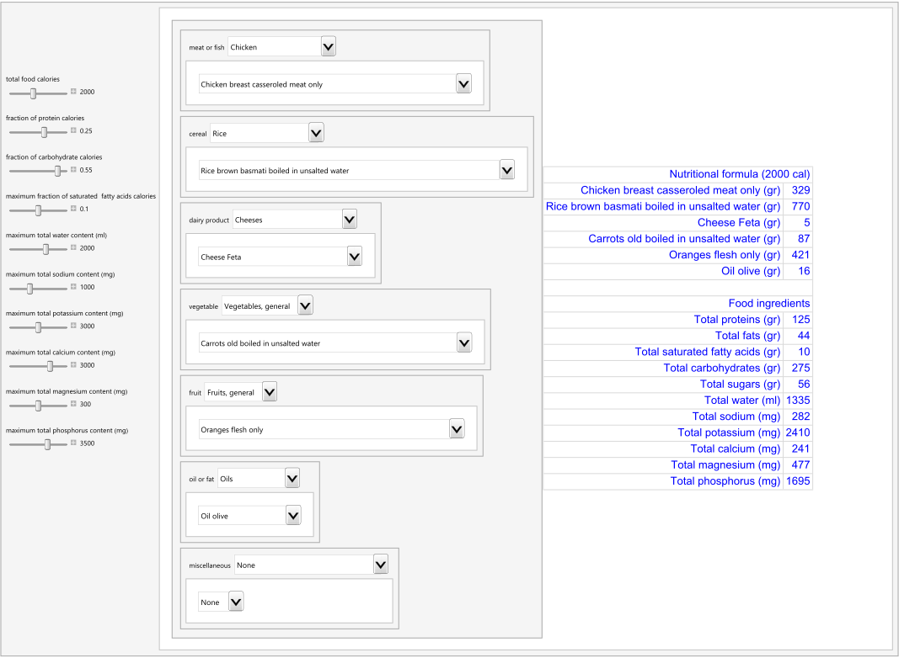

HCSL Publications
Clinical Tools
1. Chatzimichail T. Enteral Nutritional Design. Wolfram Demonstrations Project, Champaign: Wolfram Research, Inc., 2017.
Abstract
Enteral feeding refers to the delivery of nutrition directly into the gastrointestinal tract, thereby providing part or all of a patient's caloric and nutritional requirements. To design an enteral nutrition formula, the respective quantities of up to six selected foods (a meat, a cereal, a dairy food, a vegetable, a fruit and an oil) are calculated. It is desired that their combination comply with user-defined specifications: total required calories (10-3000), fraction of protein calories (0.15-0.40), fraction of carbohydrate calories (0.15-0.40) and maximum total water content of the foods (1-3000 ml). The specifications are set using the sliders. The foods are selected using their respective menus. Each menu includes a "None" option.

Snapshot
Source code (Revised on 01/06/2021)
2. Chatzimichail T. Enteral Nutrition Design [Poster Presentation]. ASPEN Nutrition Science and Practice Conference, Seattle, Washington, March 26-29, 2022.
Abstract
Background: Enteral nutrition refers to the delivery of nutrition directly into the gastrointestinal tract, thereby providing part or all of a patient's caloric and nutritional requirements. It is the method of choice for the nutritional support of critically ill patients.
Methods: To assist the design of enteral nutritional formulae of blended foods, the freely available program Enteral Nutrition Design (END) was developed in Wolfram Language. It includes data of 2371 foods of the 2021 version of the Composition of Foods Integrated Dataset ((CoFID), published by Public Health England (PHE). Only the foods with all the required data where included in the database of the program. Using seven pairs of nested menus, suitable foods are selected from each of the following groups including the respective sub-groups of the dataset: 1. Meat or fish: beef, lamb, pork, veal, chicken, duck, goose, grouse, pigeon, turkey, offal, meat products, white fish, fatty fish, crustacea, molluscs and fish products and dishes. 2. Cereal: rice, pasta, breads, rolls,breakfast cereals and biscuits. 3. Dairy product: cows milk, other milks, milk based drinks, creams, cheeses, yogurts and savoury dishes and sauces. 4. Vegetable: potatoes, beans and lentils, peas, vegetables, general and vegetables, dried. 5. Fruit: fruits, general, and fruit juices. 6. Oil or fat: spreading fats, animal fats, oils, non-amimal fats and cooking fats. 7. Miscallaneous: eggs, soups, sauces and miscellaneous foods, nuts and seeds and sugars, preserves and snacks.
Results: The quantities of the selected foods are calculated to comply with user-defined specifications: total required calories (10–5000), fraction of protein calories (0.15–0.40), fraction of carbohydrate calories (0.15–0.40), maximum total water (1–3000 ml), sodium (1–6000 mg), potassium (1–3000 mg) , calcium (1–4000 mg), magnesium (1–600 mg) and phosphorus (1–5000 mg) content of the foods. If the system of the linear equations derived from the user-defined specifications and the composition of the selected foods is solvable, then a nutritional formula is designed and a table of the quantities of the selected foods and their total proteins, fats, saturated fatty acids, carbohydrates, sugars, water, sodium, potassium, calcium, magnesium and phosphorus is generated.
Conclusion: The program END is user-friendly and is intended to be used as an educational and clinical tool for the design of patient-specific enteral nutritional formulae of blended foods.

Snapshot